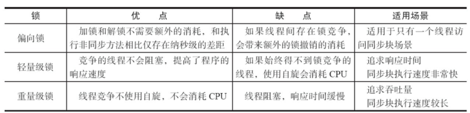

1. synchronized type#
- Synchronized methods
- Synchronized statements
2. Synchronized Methods#
修饰实例方法，作用于当前对象实例加锁，进入同步代码前要获得当前对象实例的锁。修饰静态方法，作用于当前类对象加锁，进入同步代码前要获得当前类对象的锁。
2.1 不可插入#
It is not possible for two invocations of synchronized methods on the same object to interleave. When one thread is executing a synchronized method for an object, all other threads that invoke synchronized methods for the same object block (suspend execution) until the first thread is done with the object.
当一个方法是同步的时候，当前线程在执行时，其他线程都会停止运行，直到线程完成工作，下一个线程继续执行。
2.2 自动传递状态#
when a synchronized method exits, it automatically establishes a happens-before relationship with any subsequent invocation of a synchronized method for the same object. This guarantees that changes to the state of the object are visible to all threads.
保证状态可见，上个线程对对象的操作结果会作为输入给下一个线程来使用。
3. Synchronized Statements#
修饰代码块，指定加锁对象，对给定对象加锁，进入同步代码库前要获得给定对象的锁。
Synchronized statements must specify the object that provides the intrinsic lock.
public void addName(String name) {
synchronized(this) {
lastName = name;
nameCount++;
}
nameList.add(name);
}
这里lastname 和namecount都要改变，是同步的。但要注意在声明里不可以调用其他对象的方法。
4. 底层实现原理#
可以锁代码块，也可以锁方法。如果锁的是类的实例对象，那么就是锁这个。如果锁的是类对象，那么尽管new多个实例对象，他们仍然属于同一个类，依然会被锁住，即线程之间保证同步关系。
synchronized 同步语句块的实现使用的是 monitorenter 和 monitorexit 指令，其中 monitorenter 指令指向同步代码块的开始位置，monitorexit 指令则指明同步代码块的结束位置。
当执行 monitorenter 指令时，线程试图获取锁也就是获取 monitor(monitor对象存在于每个Java对象的对象头中，synchronized 锁便是通过这种方式获取锁的，也是为什么Java中任意对象可以作为锁的原因) 的持有权.当计数器为0则可以成功获取，获取后将锁计数器设为1也就是加1。相应的在执行 monitorexit 指令后，将锁计数器设为0，表明锁被释放。如果获取对象锁失败，那当前线程就要阻塞等待，直到锁被另外一个线程释放为止。
最开始的Synchronized是调用OS的mutex lock，要完成context switch ，映射到原生操作系统里，从用户态转到内核态。现在从JVM层面做了大量的优化，减少了锁开销。
5. synchronized 优化#
synchronized是互斥的，我们需要找方法加快中间过程，比如传统的零售交钱排队，找零到扫码付费的转变。这里介绍轻量级锁，偏向锁。
5.1 CAS操作#
使用锁的时候，线程获取锁是一种悲观锁，即认为每一次执行临界区的代码都会产生冲突，所以当前线程获取锁的时候同时会堵塞其他线程获取锁。而CAS是一种乐观锁策略，假设所有线程访问共享资源的时候不会出现冲突。出现了冲突以后采取CAS(compare and swap) 策略，用来比较交换，看线程之间是否出现了冲突。
5.1.1 操作过程#
CAS比较交换的过程可以通俗的理解为CAS(V,O,N)，包含三个值分别为：V 内存地址存放的实际值；O 预期的值（旧值）；N 更新的新值。当V和O相同时，也就是说旧值和内存中实际的值相同表明该值没有被其他线程更改过，即该旧值O就是目前来说最新的值了，自然而然可以将新值N赋值给V。反之，V和O不相同，表明该值已经被其他线程改过了则该旧值O不是最新版本的值了，所以不能将新值N赋给V，返回V即可。当多个线程使用CAS操作一个变量是，只有一个线程会成功，并成功更新，其余会失败。失败的线程会重新尝试，当然也可以选择挂起线程。
It compares the contents of a memory location with a given value and, only if they are the same, modifies the contents of that memory location to a new given value. This is done as a single atomic operation. The atomicity guarantees that the new value is calculated based on up-to-date information; if the value had been updated by another thread in the meantime, the write would fail.
非阻塞同步。
5.1.2 存在的问题#
- ABA问题
发生了变化，但又变了回去。（加上序号来解决）
- 自旋时间过长
- 只能保证一个共享变量的原子操作
5.2 对象头#
对象的锁 -> 对象的标记，存在java对象的对象头里面。存放有
- 锁状态
- 无锁状态
- 偏向锁状态
- 轻量级锁状态
- 重量级锁状态
- 对象的hashcode
- 对象分代年龄
- 是否是偏向锁
- 锁标志位
Tips: 级别从低到高依次是：无锁状态、偏向锁状态、轻量级锁状态和重量级锁状态，这几个状态会随着竞争情况逐渐升级。锁可以升级但不能降级，意味着偏向锁升级成轻量级锁后不能降级成偏向锁。这种锁升级却不能降级的策略，目的是为了提高获得锁和释放锁的效率。
5.3 偏向锁#
大多数情况下，锁不仅不存在多线程竞争，而且总是由同一线程多次获得，为了让线程获得锁的代价更低而引入了偏向锁。
当一个线程访问同步块并获取锁时，会在对象头和栈帧中的锁记录里存储锁偏向的线程ID，以后该线程在进入和退出同步块时不需要进行CAS操作来加锁和解锁，只需简单地测试一下对象头的Mark Word里是否存储着指向当前线程的偏向锁。如果测试成功，表示线程已经获得了锁。如果测试失败，则需要再测试一下Mark Word中偏向锁的标识是否设置成1（表示当前是偏向锁）：如果没有设置，则使用CAS竞争锁；如果设置了，则尝试使用CAS将对象头的偏向锁指向当前线程
偏向锁使用了一种等到竞争出现才释放锁的机制，所以当其他线程尝试竞争偏向锁时，持有偏向锁的线程才会释放锁。
5.4 轻量级锁#
线程在执行同步块之前，JVM会先在当前线程的栈桢中创建用于存储锁记录的空间，并将对象头中的Mark Word复制到锁记录中，官方称为Displaced Mark Word。然后线程尝试使用CAS将对象头中的Mark Word替换为指向锁记录的指针。如果成功，当前线程获得锁，如果失败，表示其他线程竞争锁，当前线程便尝试使用自旋来获取锁。
轻量级解锁时，会使用原子的CAS操作将Displaced Mark Word替换回到对象头，如果成功，则表示没有竞争发生。如果失败，表示当前锁存在竞争，锁就会膨胀成重量级锁。
5.5 比较#
